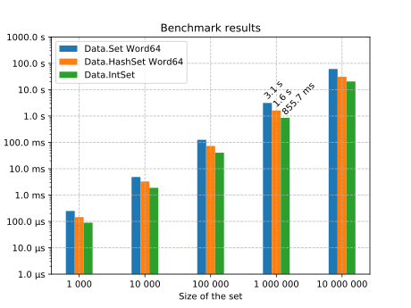
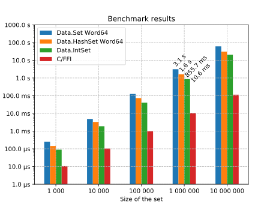
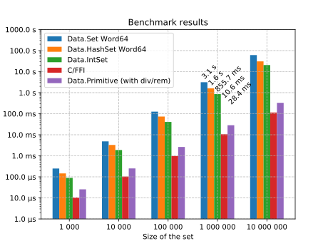
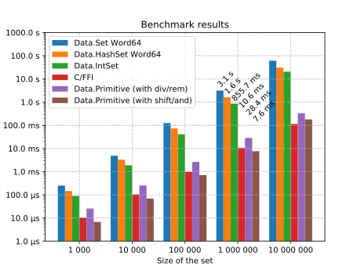

Implementing efficient and fast data structures in Haskell is not straightforward. A functional implementation of an abstract data type is often orders of magnitude slower than an imperative solution that provides the same functionality. This blog post compares several implementations of a concrete and relatively simple abstract data type in terms of execution time. Ultimately, we develop an imperative data structure using native Haskell code that is as fast as its C equivalent.
We will consider a set of integer numbers as a simple abstract data type. Our set of integers has two operations:
add: Add an integer to the set, ignoring duplicates as is expected from a regular set.check: Check whether a given integer is in the set or not, returning a Boolean value.
For the purpose of brevity, we have not included an operation that removes an integer from the set. The reader will most certainly be able to add this operation to the proposed solutions if desired.
We will furthermore assume that the integer set will have to be scalable to hold numbers from a large predefined range (e.g. values from 5 to 15 million) and that the set will be very densely populated.
We will compare several implementations by leveraging the excellent criterion benchmark library. First, we will consider several naive implementations which use off-the-shelf Haskell data structures. Then we will explore the performance of a C implementation using Haskell’s foreign function interface. Lastly, we will try to match the speed of C by porting the imperative C data structure to Haskell. All code is available on GitHub.
Defining the benchmark
As previously discussed we will consider a densely populated integer set with addition and lookup operations for a certain range. To adequately benchmark all data structures, we sequentially insert and query a predefined array of numbers1.
The code below shows the general structure of a benchmark for a specific data structure. Generating the list of integers is not included in the benchmark. We have executed the benchmark and plotted the results for various rangesfull code.
import MyIntSetModule as M
intsetBench :: Word64 -- ^ Lower bound
-> Word64 -- ^ Upper bound
-> Vector Word64 -- ^ Integers to add
-> IO ()
intsetBench minB maxB xs = do
s <- M.new minB maxB
forM_ xs $ \i -> do
M.add s i
f <- M.check s i
unless f $
throwIO $ userError "implementation errors"
generateInts :: Word64 -> Word64 -> Int -> Vector Word64
generateInts minB maxB n =
V.fromList . take n $ randomRs (minB, maxB) (mkStdGen 0x214f36c9)Off-the-shelf Haskell data structures
The Haskell library ecosystem contains many set-like data structures. The Data.Set module exposes Set, which is based on binary search tries2, while the Data.HashSet module implements HashSet, which uses a data structure called a hash array mapped trie or HAMT. The containers package even includes the specialized Data.IntSet module, especially developed for storing dense integer set. Its implementation is based on Patricia tries, a variant on binary tries3.
All of these data structures are persistent, often with different performance characteristics. To give a detailed overview of these data structures would lead us too far – we refer to the documentation and the provided resources – but we can easily check their performance using our benchmark.

We can see that execution times are acceptable for small set sizes. However, for large set sizes, building and accessing the set becomes unacceptably slow.
Bit vectors in C
The desired abstract data type immediately hints at a very simple solution. Since we know the integer set will be very densely populated, and the range of integers is predefined, we can simply use a bit vector, keeping a bit for each possible number in the set. In such a way, storing 10 million numbers would require only 1.2 MB.
Implementing such a set in C is rather straightforward. And requires only a minimal amount of code4,full code:
typedef struct int_set_t {
uint64_t min_bound;
uint64_t max_bound;
uint64_t* in_bounds;
} int_set_t;
int_set_t* new_int_set(uint64_t min_bound, uint64_t max_bound) {
size_t num_in_bounds = (size_t)(max_bound - min_bound) / 64 + 1;
int_set_t* set = (int_set_t* )calloc(1, sizeof(int_set_t));
set->min_bound = min_bound;
set->max_bound = max_bound;
set->in_bounds = (uint64_t* )calloc(num_in_bounds, sizeof(uint64_t));
return set;
}
void int_set_add(int_set_t* set, uint64_t n) {
n -= set->min_bound;
uint64_t o = n / 64;
uint64_t i = n % 64;
uint64_t mask = (uint64_t)1 << i;
set->in_bounds[o] |= mask;
}
void int_set_check(int_set_t* set, uint64_t n) {
...
}Haskell has an excellent foreign function interface which allows us to compile and call C functions with minimal overheadfull code:
data IntSetPtr
type IntSet = Ptr IntSetPtr
...
foreign import ccall unsafe "int_set_add" c_int_set_add ::
IntSet
-> CULong
-> IO ()
add :: IntSet -> Word64 -> IO ()
add s = c_int_set_add s . fromIntegral
...We can now add our C implementation to the benchmarks:

We immediately see that this straightforward imperative solution is orders of magnitude faster than our functional equivalents. Yet, it comes at a cost of maintaining some C code inside our Haskell application.
Bit vectors in Haskell
Luckily, the imperative C code can quickly be translated to native Haskell code. GHC directly supports allocating, modifying and reading chunks of memory by exposing the GHC.Exts module. Directly using this module can be a bit daunting5, but luckily the primitive library provides a nice abstraction on top of GHC’s built-in byte arrays.
Allocating and using memory can be done inside the PrimMonad, which is mostly specialized to either IO or ST. Operations like newByteArray or writeByteArray can be used to directly interact with raw memory. Translating the C code to Haskell is now rather straightforwardfull code.
data IntSet s = IntSet {
intSetMinBound# :: {-# UNPACK #-} !Word64
, intSetMaxBound# :: {-# UNPACK #-} !Word64
, intSetInBounds# :: {-# UNPACK #-} !(MutableByteArray s)
}
new :: PrimMonad m
=> Word64 -- ^ Minimum bound of the integer set
-> Word64 -- ^ Maximum bound of the integer set
-> m (IntSet (PrimState m))
new !minB !maxB = do
let !numInBounds = (maxB - minB) `div` 8 + 1
set <- newByteArray (fromIntegral numInBounds)
fillByteArray set 0 (fromIntegral numInBounds) 0
return $! IntSet {
intSetMinBound# = minB
, intSetMaxBound# = maxB
, intSetInBounds# = set
}
{-# SPECIALIZE new :: Word64 -> Word64 -> IO (IntSet (PrimState IO)) #-}
add :: PrimMonad m => IntSet (PrimState m) -> Word64 -> m ()
add !set !n =
let !n' = n - intSetMinBound# set
let !o = fromIntegral $ n' `div` 64
let !i = fromIntegral $ n' `rem` 64
let !mask = (1 :: Word64) `shiftL` i
b <- readByteArray (intSetInBounds# set) o
let !b' = b .|. mask
writeByteArray (intSetInBounds# set) o b'
{-# SPECIALIZE add :: IntSet (PrimState IO) -> Word64 -> IO () #-}In the code above we used the SPECIALIZE compiler directive to instruct GHC to provide specialized function implementations for the IO monad. This ensures that no type class dictionaries are passed around when calling these functions in the IO monad. Our benchmark results are optimistic!

Closing the gap
We can see that our previous Haskell implementation competes with C, yet it is still about 2 to 3 times slower than the C implementation. Unfortunately, it is not immediately clear why. To discover the root cause of the difference in execution time we have to take a look at the code that GHC generates.
When compiling Haskell code to an executable binary, GHC uses many intermediate formats, all the way from the Haskell code you write to the machine code that gets executed on the machine. When a performance deterioration cannot be explained by inspecting the Haskell code itself, we have to inspect either the Core6 code or the native assembly code. Luckily, the ghc-core tool can be used to inspect both. In our case, comparing the assembly code generated by GCC for our C implementation and the assembly code generated by GHC for our Haskell implementation exposes the root problem. Can you spot it?
$ stack install ghc-core
$ stack exec ghc-core -- src/Data/IntSet/NativeDiv.hs
...
Data.IntSet.Native.$wadd_info:
...
movl $64,%ebx
movq %rax,%rcx
xorq %rdx,%rdx
divq %rbx
shrq $6,%rcx
cmpq $64,%rdx
...
movl $1,%eax
movq %rdx,%rcx
shlq %cl,%rax
...
$ gcc -S src-c/intset.c -o -
...
_int_set_add_in_bounds:
...
shrq $6, %rax
movq %rax, -24(%rbp)
movq -48(%rbp), %rax
andl $63, %eax
movq %rax, -16(%rbp)
movq -16(%rbp), %rax
movl $1, %edx
movl %eax, %ecx
salq %cl, %rdx
...GHC has not optimized the remainder operation when the second operand is a multiple of 2. It uses the div instruction in the check and add functions, while GCC has replaced this instruction by a shift and an and instruction, as div instructions are relatively expensive on most CPUs.
Manually using the bitwise operators from Data.Bits in our Haskell code, makes GHC generate the correct instructionsfull code:
add :: PrimMonad m => IntSet (PrimState m) -> Word64 -> m ()
add !set !n =
let !n' = n - intSetMinBound# set
let !o = fromIntegral $ n' `shiftR` 6
let !i = fromIntegral $ n' .&. 63
let !mask = (1 :: Word64) `shiftL` i
...Now, our Haskell implementation is really as fast as C!

Conclusion
There will always be a fundamental mismatch between functional programming and fast imperative data structures. However, Haskell definitely offers enough support for low-level implementations of such data structures, without the need to call into foreign code written in traditional low-level imperative languages.
The array of numbers is randomly generated for a specific range and has the same size as that range. However, when generating random numbers duplicates are allowed, which means that we expect that about 63% of all numbers in the range will eventually be added to the set.↩
Nievergelt, J. and Reingold, E.M., 1973. Binary search trees of bounded balance. SIAM journal on Computing, 2(1), pp.33-43.↩
Okasaki, C. and Gill, A., 1998, September. Fast mergeable integer maps. In Workshop on ML (pp. 77-86).↩
Adding support for numbers that are out of range can be done in a relatively simple way. The full source code uses a simple hash table with chaining.↩
Directly using the GHC.Exts module is not only dauntingcode, but also does not improve performancefigure.↩
We will not be inspecting any Core in this blog post. However, it is very readable as it looks a lot like regular Haskell. Run the provided
ghc-corecommand to take a look at it!↩
{kind=link}